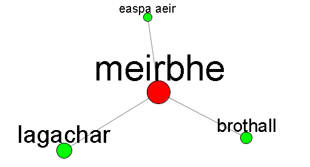

Líonra Séimeantach na Gaeilge:
Sonraí
Kevin P. Scannell
Conas a úsáidtear an brabhsálaí 3T
Ar dtús, cuir focal nó frása isteach sa bhosca cuardaigh aimsigh.com. Má tá níos mó ná roinn chainte amháin ag an bhfocal, fiafrófar díot ceann acu a roghnú. Go hiondúil, áfach, luchtófar feidhmchláirín Java go huathoibríoch san áit faoin bhosca chuardaigh, agus taispeánfar píosa beag den líonra ann, láraithe ar d'fhocal.
Seo iad na gníomhartha atá ar fáil sa bhrabhsálaí:
- Rothlú. Cliceáil agus tarraing do luch ar spás folamh chun an líonra a rothlú. Má scaoileann tú an luch agus é ag bogadh, leanann an pictiúr ag gluaiseacht.
- Nascleanúint. Is féidir turas a dhéanamh tríd an líonra trí nóid (dearg nó uaine) a chliceáil. Cuirfear an nód a chliceálann tú i lár an scáileáin agus athdhearfar na craobhacha is gaire don nód seo.
- Eolas a fháil. Cuir an cúrsóir anuas ar nód chun roinn chainte an fhocail agus a dhíochlaonadh a fheiceáil i bpreabfhuinneog bheag.
- Nóid a tharraingt. Cliceáil agus tarraing nód chun é a bhogadh. Nuair a scaoilfidh tú an luch, rachaidh sé ar ais go dtí a áit nádúrtha.
Tá gach nód uaine ina "mhol" — focal a léiríonn bunchiall sa líonra. Comhfhreagraíonn gach nód dearg le focal ortagrafach agus tá sé nasctha leis an mol uaine a thugann a bhunchiall (nó le níos mó ná mol amháin más focal athbhríoch é). Ceanglaíonn nascanna dearg-dearg focail chomhchiallacha, eagraithe i bhfáinne timpeall moil uaine. Is iad na nascanna uaine-uaine a sholáthraíonn saibhreas an líonra i ndáiríre — léiríonn siad gaolta séimeantacha níos ginearálta (ar nós hipearainmneacha agus hiopainmneacha) idir na bunchialla.
Mar shampla, má chuireann tú an focal meirbhe isteach sa bhosca cuardaigh, feicfidh tú rud éigin cosúil leis seo i do bhrabhsálaí:

Ciallaíonn na trí mhol uaine go bhfuil trí bhunchiall ag an bhfocal meirbhe: brothall (B. "sultriness, humidity"), easpa aeir (B. "stuffiness"), agus lagachar (B. "weakness"). Má chliceálann tú an nód uaine brothall, feicfidh tú é seo:

Anois, tá brothall sa lár agus tá cúig nód dearg ina thimpeall, focail chomhchiallacha leis an mbunchiall seo. Ina dteannta seo, tá aon ghaol uaine-uaine ann, leis an bhfocal teaspach (B. "hot weather"). Má chliceáil tú an nód lagachar in ionad brothall, bheadh an scéal i bhfad níos casta:

I dtús báire, mar a tharlaíonn uaireanta, léiríonn an nód uaine lagachar dhá bhunchiall i ngar do na focail Bhéarla "weakness" agus "faintness". Feicfidh tú roinnt nód a fhreagraíonn don chéad bhunchiall (m.sh. lag), cinn eile níos gaire don dara ciall (meirfean), agus go leor eile a fhreagraíonn dóibh araon. Tugann sé seo go leor idirghníomhartha breá blasta sa líonra. Tabhair faoi deara go bhfuil nóid uaine ann freisin, ach seans go bhfuil siad níos deacra a thabhairt chun grinnis sa phictiúr thuas, gan a bheith in ann é a rothlú: marbhántacht (B. "lethargy"), soghontacht (B. "vulnerability"), míthathag (B. "flimsiness"), éalang (B. "a weak spot"), srl.
Conas a chruthaigh mé an líonra
Thosaigh an tionscadal seo i 2002 nuair a chruthaigh mé teasáras simplí Gaeilge, bunaithe ar Theasáras Roget atá ar fáil saor in aisce ó Project Gutenberg. Labhair mé ar an obair sin ag an gcomhdháil TALN 2003 i Batz-sur-Mer (sa Bhriotáin): Automatic thesaurus generation for minority languages: an Irish example. Ní raibh mé lánsásta le cáilíocht an teasárais a tháinig ón algartam sin, ós rud é gur tháinig sé in oidhreacht ar na fadhbanna go léir i Roget: struchtúr anásta nach bhfuil úsáideach le haghaidh bogearraí teangeolaíochta eile (liostaí fada d'fhocail gar-chomhchiallacha bailithe le chéile i gcatagóirí ginearálta), easpa téarmaíochta nua-aimseartha (is ón eagrán 1913 é an leagan Roget atá saor in aisce), agus easpa gaolta séimeantacha cosúil le hipearainmneacha agus hiopainmneacha. Dá bhrí sin uile níor scaoil mé an teasáras amach go forleathan, le súil go mbeidh seans agam feabhas mór a chur air.
Mar a fheicfidh tú sa pháipéar TALN thuasluaite, ba léir dom go fiú ansin gurbh fhéidir formhór na bhfadhbanna seo a réiteach trí WordNet Princeton a úsáid in ionad Roget mar bhunsraith. B'fhíor an méid sin. Agus níos tábhachtaí fós, tá algartaim nua níos cumhachtaí agam anois lenar féidir aistriúcháin athbhríocha Béarla d'fhocail Ghaeilge a imdhealú agus chuir sé seo feabhas mór ar an scéal.
Is é croí na ceiste agus an líonra á chruthú ná gach focal Gaeilge a mhapáil go dtí a bhunchiall nó bunchialla Béarla i WordNet Princeton. Chun na críche seo, úsáidim na gearraistriúcháin Bhéarla atá i mo bhfoclóir leictreonach Gaeilge. Focal amháin nó dhá fhocal atá i gceist go hiondúil, ar nós na n-aistriúchán atá i bhfoclóir Uí Dhónaill. Nuair nach bhfuil ach ciall amháin ag aistriúchán Béarla, níl aon fhadhb ann: Sainmhínítear stáplóir mar "stapler" agus níl ach ciall amháin ag an bhfocal seo i WordNet Princeton. Is iad na focail athbhríocha Bhéarla an chuid is deacra den obair; focail ar nós "bank", "ball", nó "flag".
My approach to disambiguation uses a corpus of English texts and their Irish translations, aligned sentence-by-sentence. Consider for example the word bruach which has "bank" as one of its glosses. I extract all Irish sentences containing bruach (or bhruach, mbruach, etc.) and the corresponding English sentences. Some of the English sentences will contain the word "bank", and the hope is that the additional context provided by these sentences can be used to decide which is the correct sense of "bank" using standard techniques in word-sense disambiguation. To ensure enough data are available, I am very inclusive about what goes into the bilingual corpus. For example, the Irish words and their glosses are included, even though they do not form complete sentences. Nevertheless, the glosses alone are often sufficient to determine the correct sense. This fact is well-known to lexicographers, including Ó Dónaill et al, who gloss words like feileastram with two ambiguous English words ("flag, iris") but with no fear of confusion. The original version of the thesaurus from 2003 relied primarily on the glosses for disambiguation since I had not yet created the big bilingual corpus.
Nóta tábhachtach teicniúil eile: ní mhapálaim focail Ghaeilge go dtí na bunchialla i WordNet Princeton go díreach. Is é cúis leis seo go ndéanann na foclóirithe Princeton idirdhealuithe an-chaolchúiseacha idir bríonna, go fiú idirdhealuithe nach féidir le daoine éirimiúla gan traenáil speisialta i bhfoclóireacht a dhéanamh. Agus chomh cinnte le sioc nach féidir le ríomhchlár dúr staitistiúil an jab céanna a dhéanamh go hiontaofa. Ina theannta sin, tá go leor bunchiall sa Ghaeilge nach bhfuil ar fáil i mBéarla (m.sh. freagraíonn "dearg" agus "rua" do bhunchiall amháin ("red") i WordNet Princeton) agus is iad seo na cialla is mian liom a chaomhnú go háirithe in acmhainn Lán-Ghaeilge ar nós LSG. Dá bhrí sin, chuir mé sraith nua isteach - "líonra inmheánach" - idir Gaeilge agus Béarla le mapáil i ngach treo. I ndáiríre, líonra Béarla atá ann, ach ceann atá dírithe ar riachtanais na Gaeilge. Bhain mé an-úsáid as foclóir Béarla-Gaeilge Tomás de Bhaldraithe chun é seo a chruthú; bhí mé in ann na cialla uimhrithe a thugann de Bhaldraithe faoi gach ceannfhocal a úsáid mar mheastachán tosaigh ar fhardal na gciall sa líonra inmheánach.
© Cóipcheart 2007 Kevin P. Scannell